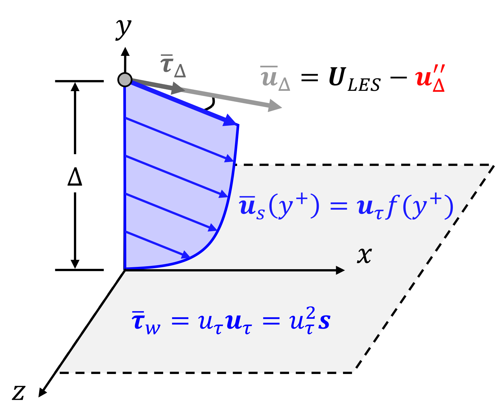
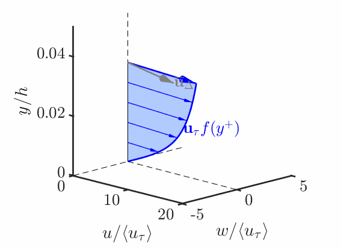

Wall Modeling
MTSWM Highlights
This page highlights the main equations and findings from the Multi-Time-Scale Wall Model (MTSWM) for Large Eddy Simulations (LES) developed during my PhD.
This work is based on the articles:
- Fowler, Zaki, Meneveau (2022) - LaRTE Wall Model
- Fowler, Zaki, Meneveau (2023) - Multi-Time-Scale Wall Model
authored by myself and my PhD advisors (Prof. Charles Meneveau and Prof. Tamer Zaki) and published by JFM as open access content.
Additional information can be found in my dissertation:
Motivation and Background
Large Eddy Simulations (LES) are becoming an increasingly relevant tool in engineering applications as computational abilities have improved. Figure 1 shows some LES engineering applications being pursued today. These include the aerospace industry where LES is being used to simulate flow over a full aircraft and wall resolved LES of a prolate spheroid, the canonical geometry for flow over Naval vehicles.

The focus of this research is unsteady or non-stationary flows. Figure 2 shows some real-world examples and their corresponding canonical test cases.
Wall modeling can significantly reduce the resolution requirements and overall computation cost. Choi and Moin (2012) showed wall modeled vs wall resolved LES can give an O(Re_{L_x} reduction in the number of grid points required. This allows LES to be performed at higher Reynolds numbers, making it a more feasible tool for engineering analysis.
In wall modeling the goal is to replace the unresolved near-wall physics with a simplified model. This is typically done by utilizing known behavior (such as the law-of-the-wall) and relating the wall stress to LES inputs (like velocity and pressure gradient) located some height of the wall, called the wall modeling height. The modeled wall stress is then applied as a boundary condition to the LES. This general modeling concept is represented in Figure 4.
The most widely used wall model is called the equilibrium wall model (EQWM), named so because it assumes shear stress are in equilibrium in the wall modeling region. The common approach is to assume the velocity profile follows the log-law U_{LES}/\tau_w^{1/2} = \frac{1}{\kappa} \log \left( \frac{\Delta \tau_w^{1/2}}{\nu} \right) + B and then to iteratively solve for the wall stress, \tau_w. This model, however, has been shown to perform poorly during non-equilibrium conditions. This led the development of the MTSWM, discussed next.
Model Time Scales
The MTSWM is motivated by the ansatz that the near-wall flow dynamics can be decomposed into different parts depending on their corresponding time scales. Below is a schematic outlining the time scales of the near-wall and the corresponding MTS wall modeling components modeling those dynamics.
The total wall-shear-stress is modeled as the sum of three components:
- Quasi-equilibrium (LaRTE) Model: slow dynamics with time scales larger than the relaxation time scale, T_s
- Laminar Non-equilibrium (lamNEQ) Model: fast dynamics occuring inside the laminar viscous sublayer with dynamics faster than the viscous time scale, t_\nu
- Turbulent Non-equilibrium (turbNEQ) Model: intermediate time scales, characteristic of turbulent fluctuations from near-wall eddies
Each of these components has an associated velocity profile.
Next we’ll outline these different components to the wall model and how they lead to the full MTS model.
MTSWM Components
LaRTE
The Lagrangian Relaxation Towards Equilibrium (LaRTE) model was motivated by capturing quasi-equilibrium dynamics. The main ansatz is that slow dynamics satisfy the law of the wall: \overline{\bm{u}} = \overline{\bm{u}}_s + \overline{v} \bm{\hat{\jmath}} \quad \textrm{where} \quad \overline{\bm{u}}_s = \bm{u}_\tau (x,z,t) f(y^+) \tag{1} The goal is then to find an evolution equation for the wall stress {\color{blue}\overline{\bm{\tau}}_w} = u_\tau \bm{u}_\tau. \tag{2}
The animation below demonstrates how the LaRTE model captures the slow dynamics from a fast input \overline{\bm{u}}_\Delta


The evolution equation for the LaRTE wall stress is found by substituting Equation 1 into the RANS equation, vertically integrating, then simplified to get \frac{\partial {\bm{u}}_\tau}{\partial t} + {\bm V}_\tau \cdot \bm{\nabla}_h {\bm{u}}_\tau = \frac{1}{T_s} \left[ \frac{\overline{\bm \tau}_w^{\rm eq}}{u_\tau} - {\bm u}_\tau\right]\, + \, u_\tau \frac{\delta^*_\Delta}{\Delta} \frac{\partial {\bm s}}{\partial t} where T_s \equiv f(\Delta^+) \, \frac{\Delta }{u_\tau} is called the relaxation time scale and \overline{\bm \tau}_w^{\rm eq} = -\frac{\Delta}{\rho} \bm{\nabla}_h \overline{p} + \overline{\bm{\tau}}_\Delta is the equilibrium wall stress.
Analyzing this equation shows the friction velocity u_\tau relaxes (in a Lagrangian sense) towards its equilibrium value at the relaxation time scale T_s. This motivated the name “Lagrangian Relaxation Towards Equilibrium” (LaRTE) wall model.
We can now add the LaRTE model to the length and time scale schematic from before:
lamNEQ
The laminar non-equilibrium (lamNEQ) model is motivated by the fact that quick changes in pressure gradient generate a laminar Stokes layer near the wall. This has been observed in a variety of flows including accelerating and pulsatile flows.
Below is an animation of the driving LES pressure gradient and the lamNEQ model response.
We then model the laminar non-equilibrium velocity \bm{u}'' by solving \frac{\partial \bm{u}''}{\partial t} = - \frac{1}{\rho} \bm{\nabla}_h p'' + \nu \frac{\partial^2 \bm{u}''}{\partial y^2}. The wall stress then has the solution {\color{red}\bm{\tau}_w''}(t) = \nu \left. \frac{\partial \bm{u}''}{\partial y} \right|_0 = \sqrt{\nu/\pi} \int_{t_0}^t - \frac{1}{\rho}\bm{\nabla}_h p''(t') \,\, (t - t')^{-1/2} dt'. \tag{3}
We can now add the lamNEQ model to our length and time scale schematic.

turbNEQ
The final component is the turbulent non-equilibrium (turbNEQ) model. This model attempts to account for the velocity difference between the LES velocity and the LaRTE and lamNEQ models {\color{green}\bm{u}_\Delta'} = {\color{gray}\overline{\bm{u}}_\Delta} - {\color{blue}\bm{u}_\tau f(\Delta^+)} = \bm{U}_{LES} - {\color{red}\bm{u}_{\Delta}''} - {\color{blue}\bm{u}_\tau f(\Delta^+)}. The turbNEQ model assumes that the velocity fluctuation, \bm{u}_\Delta', comes from near-wall turbulent flow structures such as wall attached eddies as shown in Figure 11.
A simple plug-flow plus linear velocity profile is used for the model \begin{align*} \bm{u}' &= \bm{u}_\Delta' \frac{y}{l_s} \quad \textrm{for} \quad 0 \leq y \leq l_s \\ \bm{u}' &= \bm{u}_\Delta' \quad \textrm{for} \quad y \geq l_s \end{align*} which has the corresponding turbNEQ wall stress {\color{green}\bm{\tau}_w'} \equiv \left. \nu \frac{\partial \bm{u}'}{\partial y} \right|_0 = \frac{u_\tau \bm{u}_\Delta'}{l_s^+}. \tag{4} This simple velocity profile has actually been found to be consistent with POD analysis in Hansen et al. (2022).
Adding the turbNEQ model now completes the time scale schematic shown in Figure 5. The full MTS model with LaRTE, lamNEQ, and turbNEQ parts is just the superposition of these different parts \bm{\tau}_w(x,z,t) = {\color{blue}\overline{\bm \tau}_w}(x,z,t) + {\color{red}\bm{\tau}_w''}(x,z,t) + {\color{green}\bm{\tau}_w'}(x,z,t) where {\color{blue}\overline{\bm \tau}_w}, {\color{red}\bm{\tau}_w''}, and {\color{green}\bm{\tau}_w'} are computed via Equation 2, Equation 3, and Equation 4, respectively. This model is now applied to a variety of flows to show the usefulness of this approach.
Applications
Stationary Channel Flow
First the MTSWM is applied to channel flow. Figure 12 shows the wall stress probability density functions (PDFs) for stationary channel flow with Re_\tau = 1000, 5200. Agreement between the LES with MTSWM and the DNS is very good for the streamwise PDFs although too wide for the spanwise PDFs. The turbNEQ model is able to properly capture the bulk of the streamwise wall stress fluctuations and the LaRTE model capture the mean. This is consistent with the turbNEQ model capturing near-wall turbulent fluctuations and the LaRTE model capturing the mean behavior. For larger Reynolds numbers the lamNEQ model has a very narrow PDFs due to its \sqrt{\nu} scaling.
The MTSWM is next applied to unsteady flows to analyze the model behavior during non-equilibrium conditions.
Unsteady Flows
Pulsatile Channel Flow
First is pulsatile channel flow. The flow is generated by a sinusoidal pressure gradient forcing \frac{\partial P}{\partial x} = \frac{\partial P_0}{\partial x} \left[ 1 + \beta \cos \left( \omega_f^+ t^+ \right) \right]. \omega_f^+ is the non-equilibrium parameter of interest and dictates the different flow regimes outlined in Figure 13 below.
The MTSWM is tested for this flow and compared against the DNS of Weng et al. (2016). Figure 14 shows the period wall stress (obtained using a triple decomposition) for the full range of frequencies. The MTSWM results agree quite well with the DNS for each of the forcing frequencies. The quasi-steady, intermediate, and high frequencies are highlighted to show how the different modeling components are engaged during the different flow regimes. The LaRTE model captures the slow, quasi-steady dynamics, the turbNEQ model captures the intermediate frequency dynamics, and the lamNEQ model captures the fast, high-frequency dynamics. This is consistent with the time scale schematic of Figure 5.
Linearly Accelerating Channel Flow
In linearly accelerating channel flow, flow is accelerated by a pressure gradient forcing according to -\frac{1}{\rho}\frac{\partial \langle p \rangle^*}{\partial x}(t^*)=\frac{1}{2 Re_{\tau,i}} \frac{\textrm{d} Re_m(t^*)}{\textrm{d} t^*}+\left(\frac{Re_\tau(t^*)}{Re_{\tau, i}}\right)^2 where Re_m \equiv U_m 2h/\nu is the bulk mean Reynolds number with U_m being the bulk mean velocity (averaged over the entire channel). If t^* = 0 marks the beginning of the acceleration then Re_m is set according to \begin{align*} Re_m(t^*) &= Re_{m,i} \quad &t^* < 0 \\ Re_m(t^*) &= Re_{m,i} + \frac{t^*}{T^*} \left( Re_{m,f} - Re_{m,i} \right) \quad &0 \leq t^* < T^*\\ Re_m(t^*) &= Re_{m,f} \quad &t^* \geq T^* \end{align*} where T^*, the acceleration/ramp rate, is the non-equilibrium parameter of interest. Both the initial (Re_{m,i}) and final (Re_{m,f}) The acceleration rates and their corresponding flow regime are outlined in Figure 15 below.

The fastest acceleration rate, T^*=0.1, has distinct stages over the course of the acceleration, including what is referred to as “turbulent-to-turbulent” transition.
Figure 16 shows the skin friction and wall stress time history for the MTSWM versus DNS for the fastest acceleration rate considered. Again the MTSWM (solid black line) agrees well with the DNS (dashed black line). For this fastest acceleration we observe three different stages (colored and labeled in the left subplot):
- Laminar Stage: The pressure gradient is changed so suddenly the skin friction is consistent with the laminar solution. This features a sharp initial rise from its initial value followed by a quick decrease.
- Transition Stage: After the skin friction decays during the laminar stage, it starts to increase again, mirroring laminar-to-turbulent transition.
- Final Turbulent State: The skin friction convergest to its final turbulent state, dictated by the final bulk mean Reynolds number.
When plotting the different model components of the MTSWM (right subplot of Figure 16) we can see that the different model components are “activated” during each of the stages. The LaRTE model captures the mean wall stress before acceleration and after the flow reaches its final turbulent state. The lamNEQ model captures the quick spike in the skin friction during the laminar stage. And the turbNEQ model slowly increases the skin friction during the transition stage.
Streamwise Developing Flows
ZPGTBL
The MTSWM is next applied to spatially developing flows to see how it performs during spatial non-equilibrium as opposed to temporal non-equilibrium.
First the zero pressure gradient turbulent boundary layer (ZPGTBL) is simulated. The wall model is implemented in JHU’s LESGO code which needed modifications in order to handle spatially developing flows. To simulate a developing boundary layer the rescale-recycle method by Lund et al. (1998) is implemented in order to achieve a turbulent inflow. The fluctuations downstream of the inlet are sampled, rescaled, and recycled to the inlet. A schematical picture of this is shown in Figure 17. Because LESGO is periodic, a fringe region is needed to reduce the boundary layer at the outlet and re-introduce it at the inlet. This is done via a body force (the body force formula is also privided in Figure 17).
Next a ZPGTBL is simulated for a wide range of Reynolds numbers. Figure 18 shows what the flow field looks like for a single Reynolds number. Figures Figure 19 and Figure 20 show the velocity profiles, turbulence intensities, and skin friction for all of the Reynolds numbers considered. As expected, for this flow there is little difference between the MTSWM and the EQWM (wall model baseline). The velocity profiles and turbulence intensitives follow the expected trends and the skin friction falls within 10 percent of an empirical trend. This shows the MTSWM and added modifications to the LESGO code are capable of simulating zero pressure gradient turbulent boundary layers.
Separated TBL
Finally, the MTSWM is applied to a separated turbulent boundary layer (TBL) based on the simulation setup of Coleman et al. (2018). The flow set-up and resulting instantaneous velocity field is shown in Figure 21. A separation bubble is formed by imposed suction (adverse pressure gradient) and blowing (favorable pressure gradient) on top boundary of the domain. This produces a weakly separated boundary layer at the center of the domain.
Figure 22 shows the skin friction for the MTSWM compared with the DNS of Coleman et al. (2018) and the baseline EQWM. All three curves are quite similar, however, both the MTSWM and the EQWM do not predict separation. Figure 23 shows the fraction of reversed wall stress, \gamma_r, (fraction of time the streamwise wall stress is negative). While the mean skin friction is never negative, instantaneously the wall stress is negative for both the MTSWM and EQWM. However the MTSWM gives a wider \gamma_r than the EQWM. In Figure 24 we see this is because of the additional fluctuation contributions from the lamNEQ model. The high frequency fluctuations in the LES pressure gradient drive small-scale wall stress fluctuations by the lamNEQ model. This creates the small intermittent separation patches (white regions) observed for the total wall stress for the MTSWM.


While the MTSWM has shown excellent resutls for homogeneous unsteady flows, further development is needed extend the model to handle separated flows. There are ongoing research efforts aimed at achieving this.